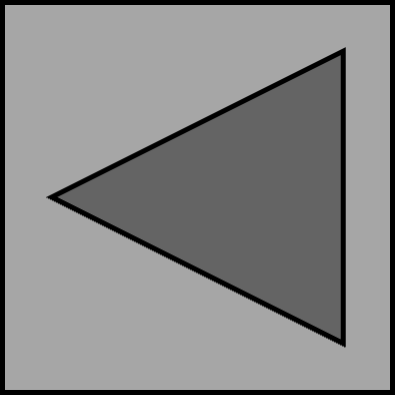
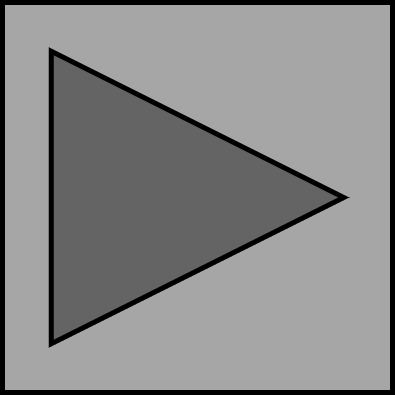
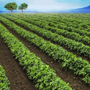
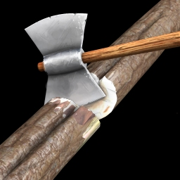
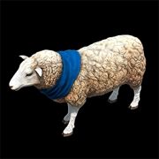
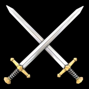

RTS Overlay
7:08 
 
7
15 0 0 22 7:55
6:40
Next
seeds

7:55
Next 3 to
(1st ) | Move 2
from
 to
Research 23 pop
(no loom)
10:05
Before | Build 
Valid build order (not valid for timing).
Image selection